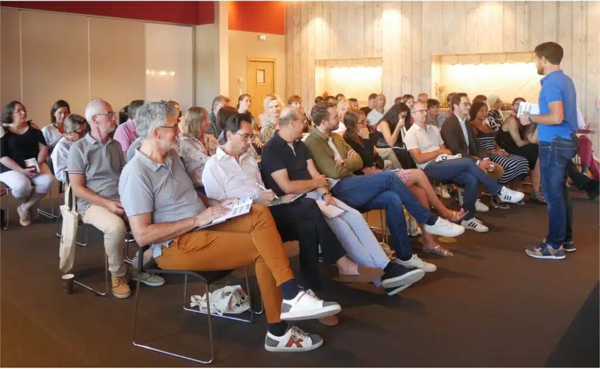
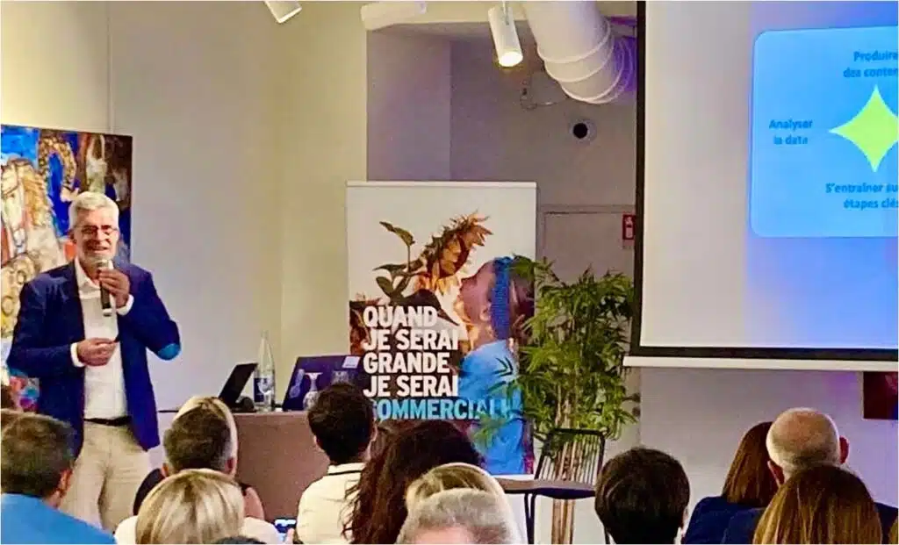
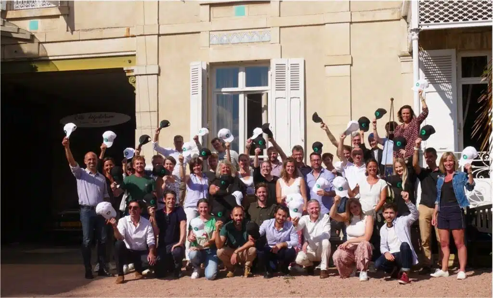

Expert de la performance commerciale depuis 2005
Société de formation et de conseil fondée en 2005, KESTIO accompagne les entreprises dans la transformation durable de leurs pratiques commerciales.
Qui sommes-nous
KESTIO est une société de formation et de conseil créée en 2005, spécialisée sur la performance commerciale des entreprises. Implantée à Lyon et à Paris, elle réunit plus de 10 formateurs internes et s'appuie sur un réseau étendu de formateurs indépendants certifiés.
Notre catalogue de formation couvre cinq grands domaines de compétences : l'excellence commerciale, le management commercial, le marketing, la relation client et les compétences humaines transverses. Cette diversité nous permet de répondre aux enjeux spécifiques de chaque organisation, quelle que soit sa taille ou son secteur d'activité.
Depuis près de vingt ans, nous accompagnons les directions commerciales, les responsables de formation et les DRH dans la conception et le déploiement de dispositifs de montée en compétences adaptés aux réalités du terrain.
Lyon & Paris
Deux implantations pour une couverture nationale et une proximité renforcée avec nos clients.
5 domaines d'expertise
Excellence commerciale, management commercial, marketing, relation client, compétences humaines transverses.
Un réseau de formateurs certifiés
Plus de 10 formateurs internes complétés par un réseau de formateurs indépendants rigoureusement sélectionnés.
Ce qui fonde notre travail depuis 20 ans
Quatre engagements qui orientent chaque décision pédagogique, commerciale et humaine.
Exigence
Un référentiel rigoureux, des formateurs sélectionnés sur leurs résultats de terrain, une ingénierie construite atelier par atelier. La performance commerciale ne se décrète pas, elle se travaille avec méthode.
Authenticité
Aucune théorie plaquée. Tous nos formateurs ont dirigé des équipes, négocié de grands comptes ou porté des transformations commerciales. Ils enseignent ce qu'ils ont vécu, pas ce qu'ils ont lu.
Proximité
Un interlocuteur unique du premier échange à l'après-certification. Une co-construction systématique avec vos équipes. Le sur-mesure chez KESTIO n'est pas une option commerciale, c'est un réflexe de conception.
Performance mesurable
Nous engageons notre responsabilité sur la transformation des pratiques, pas sur la distribution de contenus. Taux de transformation, panier moyen, qualité de la relation client : la formation n'a de sens que si elle déplace une courbe.
Notre approche
Un référentiel du dialogue commercial et une pédagogie ludique éprouvée au sein de grandes entreprises.
KESTIO a développé un référentiel du dialogue commercial structuré, qui constitue le socle méthodologique de l'ensemble de ses formations. Ce référentiel formalise les compétences relationnelles et techniques indispensables à une posture de vente-conseil authentique et performante.
Notre approche ludo-pédagogique, conçue pour maximiser l'ancrage des apprentissages, a été déployée avec succès au sein d'organisations de premier plan telles que Danone Sales University, Feu Vert ou encore la Maif. Elle repose sur des mises en situation immersives, des cas pratiques issus du terrain et des mécaniques de jeu qui favorisent l'engagement des participants.
Chaque programme fait l'objet d'une ingénierie pédagogique sur mesure, élaborée en étroite collaboration avec les Responsables de formation, les DRH et les Directeurs Commerciaux de nos clients. Cette co-construction garantit l'adéquation des contenus avec les enjeux opérationnels de chaque entreprise.
Ce qui nous distingue
Face à un marché de la formation commerciale dense et souvent uniforme, quatre partis pris assumés.
Le conseil avant la transaction
Quand la plupart des formations à la vente restent centrées sur la performance transactionnelle, nous formons des professionnels qui écoutent avant de proposer. Cette orientation change la nature même du dialogue commercial — et, in fine, la marge.
Un référentiel propriétaire, pas un assemblage
Notre référentiel du dialogue commercial n'est pas un agrégat de techniques de vente. C'est un cadre cohérent forgé sur vingt ans d'accompagnement, intégré de façon homogène à l'ensemble de nos parcours.
Des formats qui ancrent durablement
Pédagogie ludique, travail sur vos propres cas clients, coaching individuel entre ateliers, livrables opérationnels : notre ingénierie est pensée pour que vos équipes ne repartent pas seulement formées, mais réellement transformées.
Une certification qui pèse
Inscrite au Répertoire Spécifique de France Compétences, notre certification donne une valeur formelle et durable à votre investissement formation. Vos collaborateurs valorisent un titre officiel ; votre organisation sécurise ses financements OPCO.
Chiffres clés
Les indicateurs qui témoignent de notre engagement et de notre expérience.
commerciaux formés à la vente-conseil
formateurs internes et partenaires certifiés
programmes de formation conçus et déployés
année de création — près de 20 ans d'expertise
Des praticiens, pas des académiciens
Chaque formateur KESTIO est un professionnel du terrain qui a vécu les situations que vous vivez. C'est cette expérience qui fait la différence.



Nos certifications
KESTIO répond aux exigences les plus rigoureuses en matière de qualité de la formation professionnelle.
Qualiopi
Certification nationale attestant de la qualité du processus de formation. Elle garantit l'éligibilité de nos programmes aux financements publics et OPCO.
France Compétences
Notre certification "Intégrer l'approche conseil dans la démarche de vente" est inscrite au Répertoire Spécifique, gage de reconnaissance officielle.
Découvrez nos parcours certifiants
4 parcours de formation pour certifier votre approche conseil et transformer durablement votre performance commerciale.